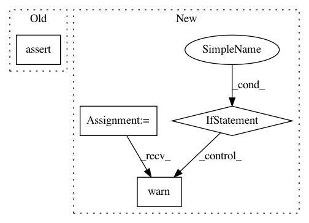

e5bd4351d180afc36535685eff59a91b18b2426c,fastFM/mcmc.py,,_validate_mcmc_fit_input,#,37
Before Change
assert_all_finite(X_train)
assert_all_finite(X_test)
assert_all_finite(y_train)
assert sp.isspmatrix_csc(X_test)
assert X_train.shape[1] == X_test.shape[1]
assert X_train.shape[0] == len(y_train)
After Change
assert_all_finite(X_train)
assert_all_finite(X_test)
assert_all_finite(y_train)
if not sp.isspmatrix_csc(X_test):
X_test = X_test.tocsc()
warnings.warn("convert X_test to csc")
if not sp.isspmatrix_csc(X_train):
X_train = X_train.tocsc()
warnings.warn("convert X_train to csc")
assert X_train.shape[1] == X_test.shape[1]
In pattern: SUPERPATTERN
Frequency: 3
Non-data size: 4
Instances
Project Name: ibayer/fastFM
Commit Name: e5bd4351d180afc36535685eff59a91b18b2426c
Time: 2015-03-24
Author: immanuel.bayer@uni-konstanz.de
File Name: fastFM/mcmc.py
Class Name:
Method Name: _validate_mcmc_fit_input
Project Name: fgnt/pb_bss
Commit Name: b8b967868bb34dc9d39af010833d3bd6a1242ee7
Time: 2019-08-06
Author: mail@lukas-drude.de
File Name: paderbox/speech_enhancement/beamformer_wrapper.py
Class Name:
Method Name: get_multi_source_bf_vector_from_masks
Project Name: taehoonlee/tensornets
Commit Name: 585af305929f1e567d32f055213d92fe5ffeeb0b
Time: 2018-04-10
Author: me@taehoonlee.com
File Name: tensornets/utils.py
Class Name:
Method Name: pretrained_initializer